Pemeliharaan proaktif memastikan umur pakai yang panjang
Load Cells atau load Cells merupakan jantung dari semua timbangan truk. Load Cells merupakan sensor yang mengukur berat benda di dek timbangan. Sebagian besar timbangan truk memerlukan 6-12 Load Cells. Sel-sel beban tersebut harus bekerja sama dengan sempurna untuk memberikan pembacaan berat yang akurat.
Ada beberapa jenis Load Cells populer yang saat ini dijual untuk digunakan dalam timbangan truk. Memahami perbedaan dalam pengoperasian dan fiturnya dapat membantu Anda memilih sistem yang akurat dan andal, yang memberikan nilai terbaik dari investasi Anda.
Sistem Load Cells, yang terdiri dari Load Cells, kabel dan sambungan, dan mungkin kotak sambungan, merupakan peluang terbesar terjadinya kerusakan pada timbangan Anda. Meluangkan waktu untuk mempelajari di mana masalah ini dapat terjadi dapat membantu Anda menghindarinya. Memilih sistem Load Cells yang tepat dapat mencegah kerugian laba, membatasi waktu henti, dan menghemat biaya perbaikan.
Mengevaluasi Load Cells
Anda memiliki sejumlah pilihan dalam hal Load Cells. Karena Load Cells merupakan komponen yang paling memengaruhi kinerja timbangan, penting untuk memahami cara kerjanya dan pedoman yang harus dipenuhi.
Apakah peraturan mengharuskan semuanya bekerja dengan cara yang sama? Sebagian besar timbangan dibuat untuk mematuhi persyaratan hukum untuk perdagangan dari Handbook 44, OIML R76, dan/atau peraturan berat dan ukuran lainnya. Apakah itu berarti bahwa berbagai jenis Load Cells bekerja dengan cara yang sama karena mereka memenuhi pedoman yang sama? Tidak.
Pedoman kinerja Load Cells dalam Buku Pegangan 44 dan OIML R76 mencakup toleransi akurasi, atau ambang batas kesalahan, yang digunakan untuk kalibrasi (lihat topik Akurasi di Bagian 4 untuk informasi lebih lanjut). Namun, standar kinerja yang termasuk dalam persyaratan tersebut masih mencerminkan kemampuan timbangan mekanis, yang sekarang sebagian besar sudah ketinggalan zaman. Timbangan mekanis memiliki kemampuan terbatas dibandingkan dengan teknologi Load Cells yang lebih modern. Dengan kata lain, beberapa sel beban mampu bekerja jauh lebih baik daripada yang dibutuhkan minimal. Jadi, manfaat apa yang ditawarkan sistem yang lebih baru kepada pembeli timbangan?
Kinerja dan fitur timbangan truk biasanya terkait dengan keakuratan dan keandalan.
• Akurasi. Sistem yang dirancang untuk menetapkan dan mempertahankan tingkat akurasi yang tinggi berarti bahwa suatu bisnis dapat menghindari kerugian produk atau laba karena kesalahan penimbangan.
• Keandalan. Sistem Load Cells yang stabil dan tangguh berarti timbangan yang lebih andal dengan waktu henti yang lebih sedikit, biaya perbaikan yang lebih sedikit, dan biaya kepemilikan yang lebih rendah.
Sekarang, mari kita bahas secara singkat berbagai teknologi skala dalam hal akurasi dan keandalannya.
Note: Perlu diingat bahwa METTLER TOLEDO telah merancang, membangun, menjual, dan/atau memperbaiki timbangan dengan masing-masing teknologi ini di masa lalu.
Jenis-jenis Load Cells
Ada lima jenis sistem Load Cells utama yang digunakan dalam aplikasi penimbangan kendaraan: Load Cells analog, Load Cells hidrolik, sistem analog/digital hibrida, Load Cells digital, dan sel beban POWERCELL.
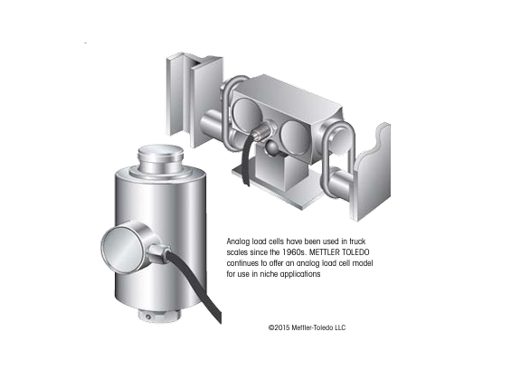Analog
Sepotong logam berbentuk presisi, sering kali baja atau baja tahan karat, yang sedikit berubah bentuknya saat gaya (berat) diterapkan. Perubahan tersebut dipantau oleh pengukur regangan listrik. Hasilnya adalah sinyal tegangan analog yang bervariasi dari sinyal input berdasarkan beban. Sinyal analog dari semua sel dijumlahkan dalam satu atau lebih kotak sambungan pada timbangan. Sinyal gabungan kemudian dikirim ke rumah timbangan, tempat diukur dan diubah menjadi sinyal digital yang menunjukkan berat.
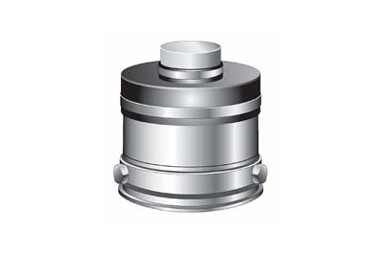Hydraulic
Load Cells hidrolik adalah piston hidrolik yang memampatkan reservoir cairan. Cairan yang dimampatkan mengalir melalui saluran hidrolik individual ke mekanisme, terkadang disebut "totalizer," yang terletak di dalam atau di dekat rumah timbangan. Mekanisme ini kemudian mengerahkan gaya akumulasi tekanan cairan gabungan ke Load Cells analog. Load Cells ini menghasilkan sinyal listrik yang menunjukkan berat total pada timbangan.
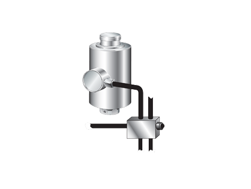Analog/digital hybrid
Di sini, Load Cells analog dihubungkan ke kotak sambungan yang mengubah sinyal analog menjadi digital. Sinyal digital lebih kuat dan tidak mudah terpengaruh oleh kesalahan penimbangan yang dapat terjadi karena gangguan dari pengaruh eksternal dibandingkan sinyal analog.
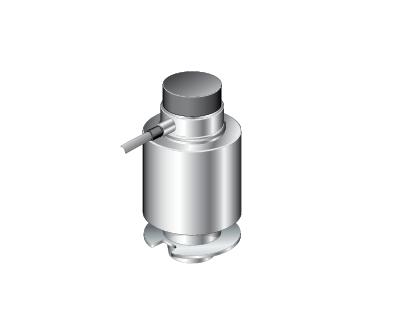Digital
Ini adalah Load Cells yang menghasilkan tegangan analog, yang diubah menjadi sinyal digital di dalam penutup Load Cells. Data dari sel diproses untuk menentukan berat total. Memanfaatkan sinyal digital di Load Cells dan di luarnya memberikan keuntungan karena sinyal tidak rentan terhadap gangguan seperti sinyal Load Cells analog.
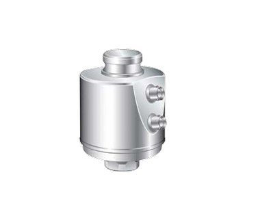POWERCELL®
These load cells utilize digital electronics and are equipped with signal- processing capabilities at each load cell. The load cell can eliminate errors by monitoring and adjusting the weight measurement based on a number of criteria. This process is called digital compensation. POWERCELL load cells have also introduced features, such as predictive diagnostics, self-monitoring, breach detection and remote diag nostics.
Special note: Mechanical scales – Sebelum diperkenalkannya komponen elektronik, semua timbangan kendaraan bersifat mekanis. Dek timbangan mekanis didukung oleh banyak tuas dan komponen poros yang mentransfer gaya beban ke indikator dial. Akhirnya, satu Load Cells yang terhubung ke terminal menggantikan indikator dial tersebut. Beberapa timbangan tersebut masih beroperasi hingga saat ini. Namun, timbangan yang didukung oleh beberapa Load Cells telah membuat sistem mekanis tersebut menjadi usang. Desain saat ini membutuhkan lebih sedikit baja dan lebih mudah dipasang dan dirawat. Desain tersebut juga sebagian besar lebih akurat dan andal daripada pendahulunya yang mekanis. Beberapa timbangan mekanis yang masih ada dapat ditingkatkan ke sistem Load Cells penuh dengan melepaskan komponen tuas besar dan memasang titik pemasangan untuk Load Cells guna mendukung dek.
Penyesuaian Shift / Sudut
Penyesuaian pergeseran (atau penyesuaian sudut) harus dilakukan saat timbangan dipasang. Penyesuaian tersebut memastikan bahwa beban pada timbangan akan ditimbang secara akurat, di mana pun beban tersebut ditempatkan pada dek timbangan. Dengan sistem Load Cells analog, prosedur dilakukan dengan menempatkan beban uji yang besar di berbagai lokasi pada dek timbangan dan melakukan penyesuaian manual yang sangat kecil pada potensiometer di kotak sambungan. Teknisi yang berkualifikasi harus menyesuaikan potensiometer secara manual untuk setiap Load Cells. Prosedur ini dapat memakan banyak tenaga kerja.
Beberapa sistem Load Cells digital telah menyederhanakan dan meningkatkan prosedur tersebut. Beban uji masih digunakan pada dek timbangan, tetapi alih-alih melakukan penyesuaian manual, terminal dilengkapi dengan program untuk mengotomatiskan penyesuaian. Alih-alih menggunakan potensiometer, penyesuaian merupakan fungsi dari pemrosesan data. Fungsionalitas penyesuaian pergeseran/sudut otomatis tersebut menghemat waktu dan biaya tenaga kerja, serta membuat prosedur tersebut jauh lebih kecil kemungkinannya mengalami kesalahan. Selama masa pakai timbangan apa pun, mungkin saja penyesuaian pergeseran/sudut perlu dilakukan beberapa kali, sehingga fitur ini sangat membantu.
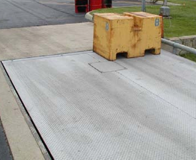Kotak Sambungan
Kami telah menyebutkan bahwa kotak sambungan digunakan dengan Load Cells analog, serta beberapa Load Cells digital. Kotak sambungan menggabungkan sinyal dari beberapa Load Cells dan kemudian mengirimkan sinyal yang dijumlahkan. Di dalam setiap kotak sambungan terdapat sambungan kabel manual yang dibuat saat timbangan dipasang, bersama dengan papan sirkuit yang menggabungkan sinyal dan potensiometer untuk melakukan penyesuaian manual. Timbangan truk yang menggunakan Load Cells analog biasanya memiliki 2 hingga 4 kotak sambungan.
Kotak sambungan merupakan penyebab utama kerusakan skala dan panggilan servis. Biasanya, hal ini disebabkan oleh masuknya uap air ke komponen elektronik dan sambungan kabel manual di dalam kotak. Uap air menyebabkan korosi dan merusak papan sirkuit.
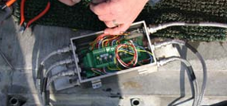 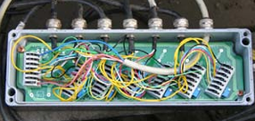 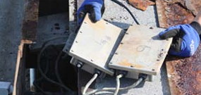Kotak sambungan berisi papan sirkuit dan banyak sambungan kabel manual. Kotak sambungan merupakan penyebab utama waktu henti timbangan truk karena sulit untuk ditutup rapat terhadap kelembapan.
Mengapa tidak membuat kotak sambungan kedap air? Banyak perusahaan telah mencobanya. Kenyataannya adalah mustahil untuk menutup kotak sepenuhnya dari semua sumber kelembapan, termasuk kelembapan yang secara alami ada di udara. Kotak sambungan harus dibuka secara berkala oleh teknisi servis selama prosedur servis. Bahkan jika kotak tetap kering, fluktuasi suhu, kondensasi, dan kelembapan yang terus-menerus akan merusak isi kotak sambungan.
Selama bertahun-tahun, Load Cells analog dianggap sebagai standar industri. Kotak sambungan mulai diterima meskipun sifatnya yang bermasalah. Produsen telah mempromosikan sistem penyegelan kotak sambungan khusus untuk membuat sistem lebih andal. Meskipun demikian, sistem tersebut masih bermasalah.
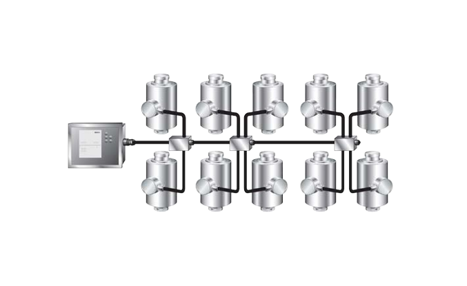Sistem Load Cells yang menggunakan kotak sambungan dapat mengalami masalah dari berbagai sumber
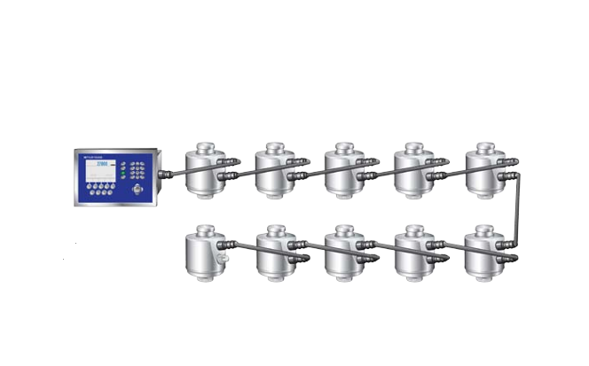Sistem Load Cells yang tidak menggunakan kotak sambungan menghilangkan banyak kemungkinan masalah dan memiliki lebih sedikit sambungan
Video: Eliminating Junction Boxes
Para ahli timbangan kendaraan di METTLER TOLEDO menyadari bahwa untuk membuat timbangan kendaraan lebih andal, kotak sambungan harus dihilangkan. Karena Load Cells digital mengeluarkan data, bukan hanya tegangan sederhana, perancang POWERCELL® menciptakan jaringan Load Cells yang menggunakan protokol komunikasi CAN-BUS. Ini adalah sistem yang terbukti dan stabil yang banyak digunakan dalam aplikasi otomotif. Ini memungkinkan koneksi antar Load Cells dibuat menggunakan konfigurasi sel-ke-sel. Hasilnya adalah sistem Load Cells POWERCELL® PDX® – jaringan Load Cells yang disederhanakan yang memiliki lebih sedikit koneksi kabel dan TANPA kotak sambungan. Eliminate the most common cause of truck scale downtime – junction boxes. Watch the video at www.mt.com/NoJunctionBoxes 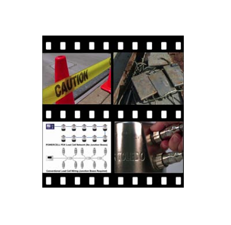
Suku Cadang Pengganti
Ketika pelanggan pertama kali melihat keunggulan Load Cells digital dibandingkan Load Cells analog, topik yang menarik adalah kompatibilitas suku cadang pengganti. Load Cells digital sering kali memiliki program khusus pabrikan, yang berarti Load Cells digital dari perusahaan "A" tidak kompatibel dengan Load Cells dari perusahaan "B". Penyedia Load Cells analog menyebut hal ini sebagai keunggulan dibandingkan Load Cells analog, karena Load Cells analog dapat dipertukarkan.
Memang, mengganti Load Cells analog bisa menjadi hal yang umum karena sejumlah alasan. Pengalaman bervariasi, tetapi Load Cells analog memiliki masa pakai rata-rata 3 hingga 5 tahun. Namun, kemajuan dalam kemampuan Load Cells digital berarti bahwa Load Cells digital secara teratur memiliki masa pakai yang lebih panjang daripada Load Cells analog. Itu membuat kompatibilitas komponen kurang relevan untuk sistem digital karena komponen pengganti kurang dibutuhkan. Bahkan jika komponen pengganti diperlukan, banyak pelanggan lebih suka menggunakan komponen asli pabrikan dalam timbangan mereka. Memelihara komponen yang tepat memastikan fitur canggih timbangan modern (pemantauan mandiri, kompensasi digital, dll.) tetap utuh.